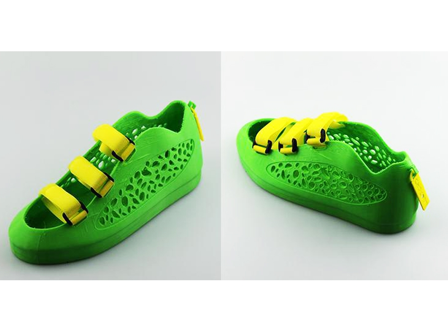

תלתפסת לכל פועל!
עירא אברמוב, אייקון 2015
שתי הגדרות
Additive Manufacturing
Computer Numerical Control
Self Replicating
Von Neumann, Freeman Dyson et alNASA 1980
Self Replicating
NASA 1980

On ISS
NASA 2015

On Mars
NASA 20?? (we hope)
On Mars
NASA 20?? (we hope)

ואז? אולי להפוך אסטרואיד לטלסקופ...
Crystalline manufacturing
1947

ST-TOS Food Synthesizer
1960s


1970 - Niven's Ringworld
"The food slot gave him flat reddish-brown bricks. Six times he dialed a brick, took a bite and dropped the brick into the intake hopper. Each brick tasted different, and they all tasted good.
At least he would not get bored with eating. Not soon, anyway.
But if they could not find plants and water to shovel into the intake hopper, the food slot would eventually stop delivering bricks.
He dialed a seventh brick and ate it."
ST-TNG Replicator
1980s
Replicator Parodies
Lexx, HHGTTG

Matter Compilers
Post scarcity but inequality via DRMPrinting is kept by the elite for control

Creative, disruptive and copyright nightmare for corporations

Printing is everywhere, and is boring

ועוד למעוניינים
Transmetropolitan, by Warren Ellis
Voyage from Yesteryear, by James P. Hogan
Mechanical Mice by Maurice A. Huigi
72 Letters, by Ted Chiang
A Fire Upon the Deep, by Vernor Vinge
The Peripheral, by William Gibson
Distress, by Greg Egan
ועוד למעוניינים
Luna, by Ian McDonald
Aurora, by Kim Stanley Robinson
Great North Road, by Peter F. Hamilton
Pushing Ice, by Alastair Reynolds
Hardwired, by Walter John Williams
Movies: Darkman, Fifth Element, Prometheus, biological printing etc
יישומים
מהירות אספקה
התאמה אישית
מחיר לסדרות קטנות
מחזור פיתוח קצר
מבנים פנימיים, צורות וטקסטורות שאי אפשר לייצר ביציקה
סביבות מרוחקות
סודיות
תותבים
תותבים

תותבים

איברים להשתלה

איברים להשתלה
איברים להשתלה

מבנה חומר מיוחד
בניינים טרומיים או מודפסים בשטח
בניינים טרומיים או מודפסים בשטח

בניינים טרומיים או מודפסים בשטח

בניינים טרומיים או מודפסים בשטח

בניינים טרומיים או מודפסים בשטח
בניינים טרומיים או מודפסים בשטח
WikiHouse
בניינים טרומיים או מודפסים בשטח

בניינים טרומיים או מודפסים בשטח
Stereo Lithography
1984

Stereo Lithography
1984

Stereo Lithography
2015


Powder
Powder
Powder

עוד טכנולוגיות שלא נדבר עליהן

FDM - Fused Deposition Modeling
- (אם החומר קשה, הפוך אותו לצמיגי)
- קח חומר צמיגי
- זוז לאיפה שאתה רוצה שיתמצק
- שים שם חומר
- חזור על התהליך
- מיכל חומר רך ומשאבה
או
חומר קשה בצורת פתיל וראש ממיס - מנועי Step
- כמה חיישנים (מיקום וטמפרטורה)
- מוח פוזיטרוני
Arduino Uno

Arduino Mega

Arduino Mega + RAMPS
Arduino embedded

One Arduino to rule them all

- ציר X
- ציר Y
- ציר Z
- ציר E
- חימום ראש
- חימום מצע
- כמה חיישנים
- מוח לחבר את הכל
חומרים
מה כבר ביקשנו?
- נזיל עד ראש ההדפסה
- מתקשה מהר מיד אחרי ההדפסה
- נדבק למצע אבל לא חזק מדי
- לא מתכווץ בהתקררות
- מינימום הפסד חומר
- לא שברירי מדי
- תכונות אחרות בהתאם למטרה - קל, חזק, גמיש/קשה, צבעוני, ניתן למחזור, עמיד למאכל או כימיכלים.
חומרים
במה נדפיס...
- פלסטיק / שרף / פולימרים אורגניים
- גומי
- סוכר / חלבון ביצה / שוקולד
- שעווה
- חימר / בוץ
- מתכות
- זכוכית
- עץ?
- בעתיד: תאי גזע, מתכת זכוכית, חלבונים...?
חומרים נפוצים להדפסה בייתית
| PLA | ABS |
|---|---|
| אורגני מתכלה/מתמחזר טמפ' נמוכה שקוף גמיש נוח לערבוב תוספים כמעט ללא ריח לא מתכווץ בקירור |
קשיח עמיד לחום ולחות ניתן להחלקה בקלות יחסית |
PLA
Polylactic acid

ABS
Acrylonitrile Butadiene Styrene

חומרים אחרים להדפסה בייתית
- NinjaFlex
- LayWoo-D3
- HIPS, TPE, PETG, PVA, Naylon
- ניסויים משונים שונים עם סיבי פחמן, מתכות ושאר תערובות להרפתקנים
חומרים נפוצים להדפסה בייתית
NinjaFlex
חומרים נפוצים להדפסה בייתית
NinjaFlex

חומרים נפוצים להדפסה בייתית
LayWoo-D3

חומרים נפוצים להדפסה בייתית
LayWoo-D3
חומרים תומכים
PVA - Polyvinyl Alcohol

חומרים מוליכים

מודלים מוכנים להדפסה
שאלות חוק